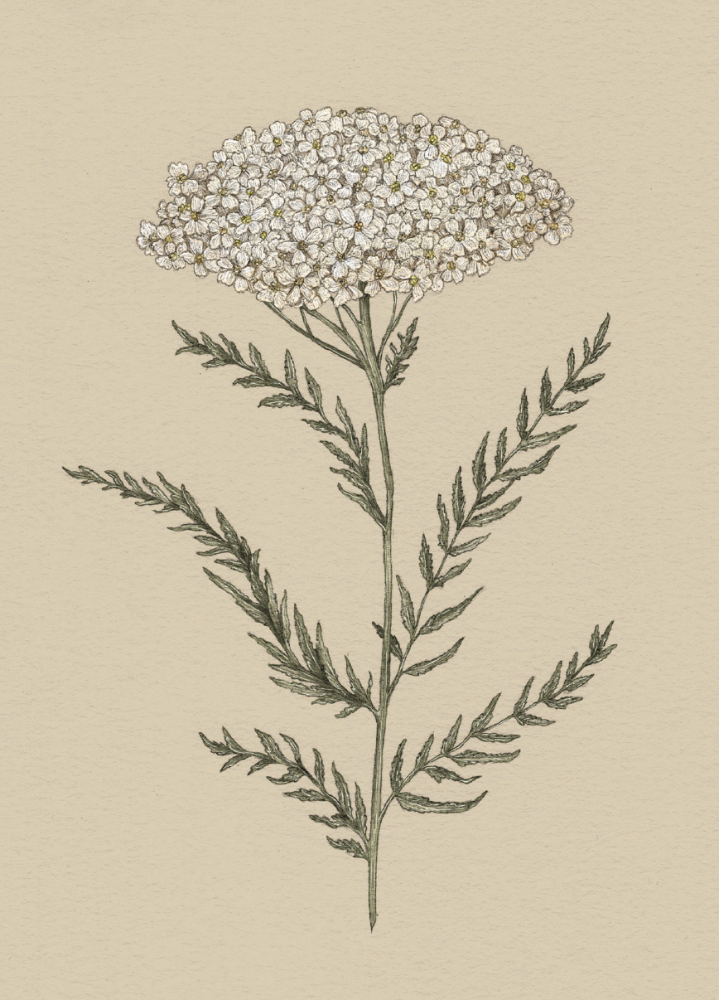

The Language of Flowers
Yarrow

Yarrow
Achillea
Victoria's Definition: Cure for a broken heart
Meaning
Cure for a broken heart
Origin
Yarrow takes its botanical name and meaning from the Greek hero Achilles, who is said to have used a
poultice of yarrow to heal the wounds of his men on the battlefield. Yarrow is an ancient healing
plant with many medicinal properties; it is used even today to stop bleeding, treat fevers, and
promote digestion.
Pair With
- Hawthorn for hope that things will get better
- Protea to indicate the tide will turn in the recipient's favor